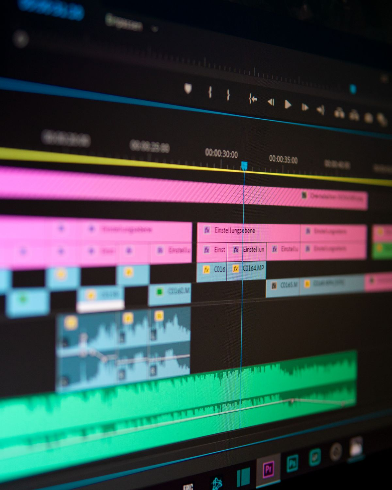
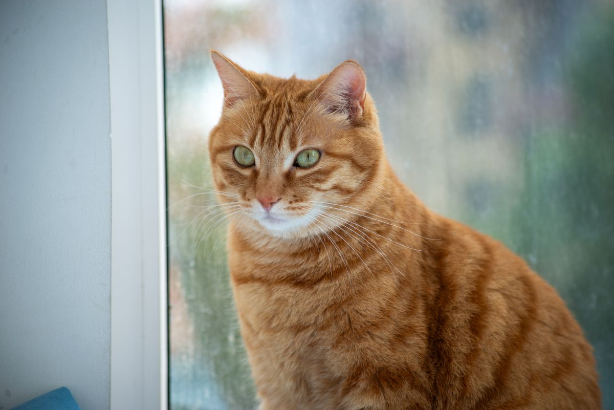

Buka vids.new di komputer, masuk dengan akun Google, pilih Create AI videos, tulis deskripsi videomu, atur durasi 3 sampai 15 detik, lalu tekan generate. Itu saja. Kamu mendapat 3 video AI gratis setiap bulan tanpa langganan, berkat model Gemini Omni 1.2 Flash yang Google rilis pada 5 November 2026.
Google Vids adalah editor video Google yang berjalan di browser komputer. Sejak 5 November 2026, Vids memakai model video terbaru Google, Gemini Omni 1.2 Flash. Siapa pun yang punya akun Google bisa membuat sampai 3 video AI berdurasi maksimal 15 detik setiap bulan tanpa biaya. Caranya, buka vids.new di komputer, masuk dengan akun Google, buat proyek baru, lalu pilih Create AI videos. Tulis prompt berisi subjek, aksi, suasana, dan gerakan kamera, pilih durasi 3 sampai 15 detik, lalu generate dan tunggu hasilnya. Kalau hasilnya belum pas, kamu bisa memperbaikinya lewat perintah teks tanpa membuat ulang dari nol. Ingat, jatah gratisnya hanya berlaku di Google Vids, bukan di aplikasi Gemini. Di aplikasi Gemini, video 15 detik baru digulirkan untuk pelanggan Google AI Ultra.
Apa itu Gemini Omni 1.2 Flash dan kenapa gratisnya cuma di Google Vids?
Gemini Omni 1.2 Flash adalah model video terbaru Google, penerus Omni 1.1 Flash. Model ini membuat klip video lengkap dengan suara dan dialog, bukan video bisu. Durasi maksimalnya 15 detik, dan kamu bisa memilih durasi per detik, dari 3 sampai 15 detik, jadi klipnya tidak harus selalu 15 detik penuh.
Google merilis model ini pada 5 November 2026. Jatah gratis 3 video per bulan adalah bagian dari Google Vids, editor video Google. Itu sebabnya kamu harus membuatnya lewat Vids, bukan lewat aplikasi Gemini. Di aplikasi Gemini, video 15 detik masih digulirkan bertahap dan baru sampai ke pelanggan Google AI Ultra.
Satu hal lagi yang perlu kamu tahu: setiap klip yang dibuat dengan Gemini Omni di Vids membawa watermark digital tak terlihat bernama SynthID. Watermark ini menandai bahwa video itu dibuat AI, jadi orang bisa memeriksanya.
Bagaimana cara membuat video AI gratis di Google Vids?
Siapkan komputer dan akun Google. Pembuatan video AI di Vids hanya bisa dilakukan di desktop, belum di HP. Ikuti langkah ini:
- Buka vids.new di browser komputer, lalu masuk dengan akun Google.
- Buat proyek baru, lalu pilih Create AI videos dari menu pembuatan.
- Tulis prompt videomu. Sebut subjeknya, apa yang dilakukan, di mana, suasananya, dan bagaimana kamera bergerak.
- Atur durasi dengan slider, dari 3 sampai 15 detik, sesuai kebutuhanmu.
- Tekan generate dan tunggu. Hasilnya muncul sebagai klip di timeline proyekmu.
- Kalau ada yang kurang pas, tulis perintah perbaikan lewat chat, misalnya ganti siang jadi senja atau buat kameranya bergerak lebih pelan. Vids mengedit klip yang sama, tidak membuat ulang dari nol.
- Simpan dan unduh videomu.
Fitur ini digulirkan mulai 5 November 2026 dan butuh 1 sampai 3 hari sampai muncul di akunmu. Kalau menu Create AI videos belum terlihat, coba lagi besok. Kamu juga bisa mengunggah foto referensi supaya wajah, produk, atau gaya visualnya konsisten di sepanjang klip.

Bagaimana cara menulis prompt supaya hasilnya bagus?
Prompt yang bagus itu spesifik. Jangan tulis "video kucing" saja. Tulis siapa subjeknya, apa yang ia lakukan, di mana, dan bagaimana kameranya bergerak. Contoh prompt yang bisa kamu salin lalu ubah isinya: "Seekor kucing oranye duduk di jendela kafe saat hujan sore, menatap tetes hujan di kaca, kamera diam lalu perlahan mendekat, suasana hangat dan tenang."
Kalau hasil pertamamu meleset, perjelas satu hal saja, misalnya gerakan kameranya atau suasananya, lalu generate ulang. Mengubah satu hal sekali jalan lebih gampang dilacak daripada mengubah semuanya sekaligus.
Google sendiri mengakui model ini masih lemah di aksi olahraga cepat, pergantian naskah yang cepat, dan fisika yang rumit. Jadi pilih adegan yang tenang: pemandangan, produk, atau orang yang bergerak pelan. Adegan seperti itu lebih sering jadi bagus di percobaan pertama.

Apa batasan jatah gratisnya?
Jatah gratisnya 3 video per bulan, masing-masing maksimal 15 detik. Totalnya 45 detik video per bulan, cukup untuk coba-coba, membuat pengumuman singkat, atau klip pembuka konten. Bukan untuk menjalankan kanal video penuh.
Google tidak menjelaskan apakah jatah yang tidak dipakai akan hangus atau berlanjut ke bulan berikutnya. Jadi anggap saja jatah itu hangus tiap akhir bulan dan pakai sebelum habis. Kalau kamu butuh lebih dari 3 video, jalurnya berbayar: lewat API Gemini, video 720p dihargai 0,07 dolar AS per detik, 30 persen lebih murah dari versi 1.1. Cek halaman resmi Google untuk harga terbaru sebelum memutuskan.
Intinya, Google Vids sekarang memberi jalan gratis untuk mencoba video AI: 3 klip 15 detik per bulan, tanpa langganan dan tanpa aplikasi tambahan. Pakai jatah bulan ini untuk satu ide yang benar-benar kamu butuhkan, tulis prompt yang spesifik, dan simpan hasilnya sebelum jatahnya habis. Selamat mencoba.
Baca juga: Daftar artikel Other | Cara bikin foto Halloween Ghostface pakai Gemini | Bing Image Creator pengganti Midjourney gratis | 5 alternatif Canva gratis
Sumber dan Info Resmi
Angka dan harga di artikel ini merujuk ke sumber berikut:
- Martin Cid: Google merilis Gemini Omni 1.2 Flash pada 5 November 2026; di Google Vids siapa pun dengan akun Google bisa membuat 3 video 15 detik per bulan tanpa biaya; klip 3 sampai 15 detik dengan suara dan dialog; di aplikasi Gemini, video 15 detik baru digulirkan untuk pelanggan Google AI Ultra.
- Mixed News: rollout dimulai 5 November 2026 dan butuh 1 sampai 3 hari sampai muncul di akun; mulai lewat vids.new di desktop.
- FoneArena: 3 video 15 detik gratis per bulan di Vids; harga API 0,07 dolar AS per detik untuk 720p, 30 persen lebih murah dari Omni 1.1.
- Tecnoapps: langkah lengkap, buka vids.new, buat proyek baru, pilih Create AI videos, tulis prompt, atur durasi 3 sampai 15 detik, unggah foto referensi, perbaiki video lewat percakapan tanpa membuat ulang.
- Unite.AI: pembuatan video AI di Vids hanya di desktop lewat vids.new dan menu Create AI videos; setiap klip membawa watermark digital tak terlihat SynthID.
- AI Frontier Post: Google mengakui model ini masih lemah di aksi olahraga cepat, pergantian naskah cepat, dan fisika rumit.
- Tech Insider: 3 klip 15 detik sama dengan 45 detik video per bulan; pengumuman tidak menjelaskan apakah jatah yang tidak dipakai berlanjut ke bulan berikut.